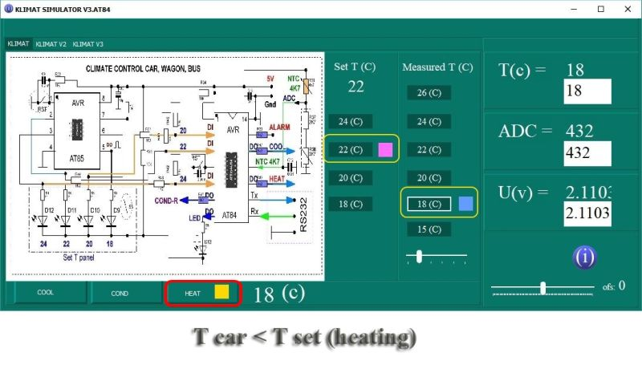

AVR climate regulation system (SW and HW)
using AT84 & AT85 microcontrollers (AVR)
T car = T set
Heating

Cooling
Cooling + Conditioner
Measured T and Set T (chart)
Two variants of NTC sensor connect
NTC 4K7 Resistance - Temperature diagramm

variable of temp (Temperature)...

data receiving from AT84
"report.csv" file
AVR climate regulator system (SW and HW)
using AT84 and AT85 microcontrollers.
Climate control system for passengers of a car, railway carriage, bus, etc.
I developed the climate control circuit and software based on the AT84 and AT85 AVR microcontrollers.
A brief description of how the circuit works.
1. The cabin contains an NTC 4K7 temperature sensor that measures the climate in the passenger area of the vehicle.2. This temperature sensor is connected to the analog input of the AT84 microcontroller.
3. A change in temperature causes a change in ADC at the AT84 input.
4. The passenger chooses a comfortable cabin temperature using one button on the control panel. The button works cyclically, each pressing of this button leads to a change in the setting to the next upward value: 18 - 20 - 22 - 24 degrees C. And so on. Temperature indicators (LED 1 - 4) indicate the selected temperature.
5. To set the temperature, an AT85 microcontroller with 4 LEDs is used. This control panel also generates reference voltages for a second microcontroller, which adjusts the interior temperature according to the passenger's selected temperature.
6. The logic of the first AT85 microcontroller provides 4 reference logic signals on the second AT84 microcontroller, and the indication of the temperature selected by the passenger.
7. The logic of the second microcontroller provides climate control according to the value selected by the passenger. The output of the second AT84 microcontroller is connected to two transistors operating in a key mode (closed / open), which connect the line or cold or warm air. It is also additionally possible to use a third key cascade, which will turn on an additional air conditioner at temperatures above 26 degrees C.
8. Additionally, I used a temperature status data link (Serial RS232) which can be used for commissioning or integrated into RS485, CAN, TCP \ IP, etc.
9. Microcontroller programs are written in C language.
10. Additional software for commissioning and diagnostics developed in RAD Studio C ++ Builder (Prof. ver. named lic.). This is a complete simulator that allows you to simulate the algorithm of the circuit, as well as to control parameters via the RS232 protocol in real time. The first window of the program is a serial terminal, which takes data from the second AT84 microcontroller and saves it as a report. The second window is ADC Converter, the third window is a virtual simulator. There are also additional windows containing help information on microcontrollers, etc. (The program is under development). New versions and their description will appear in the future.
Development: I. Shaturnyi (C) 2020
"AVR microcontrollers climate regulatin system"
I.Shaturny ishPLC © 2020
ishplcprog@gmail.com2020.11.01